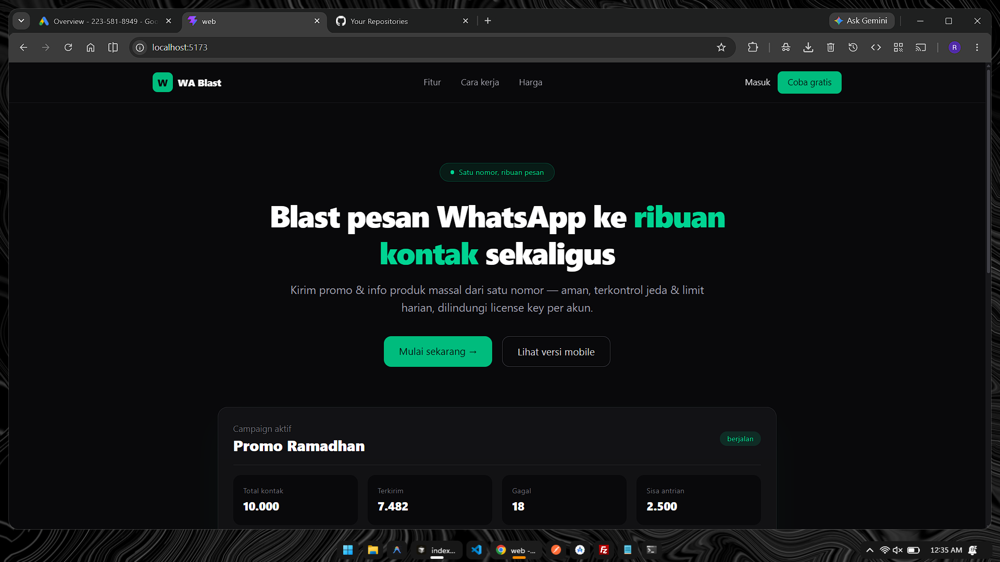
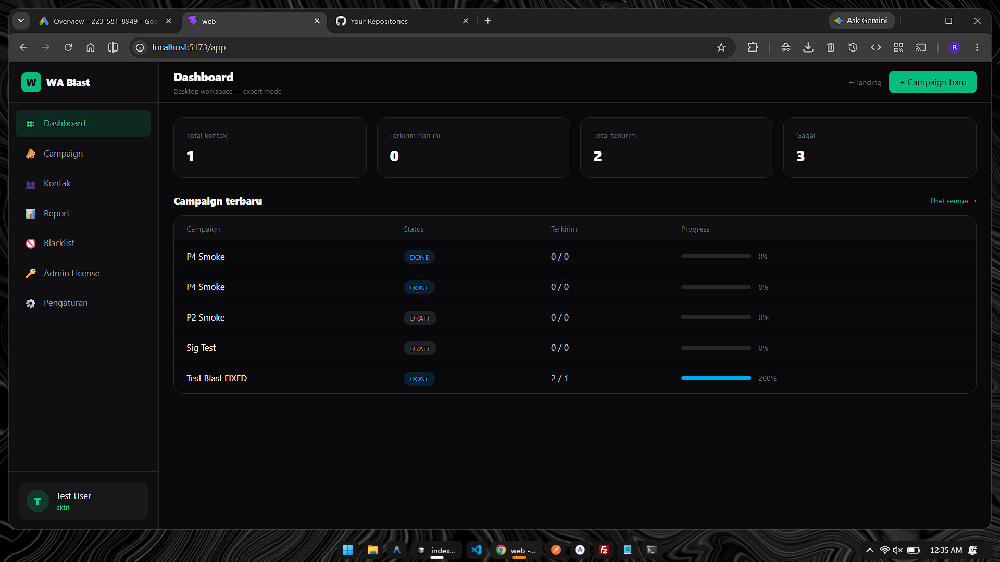
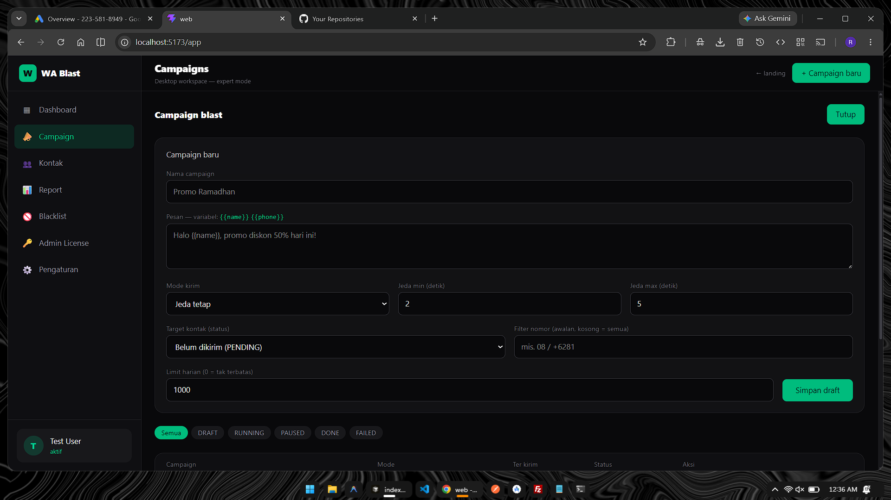
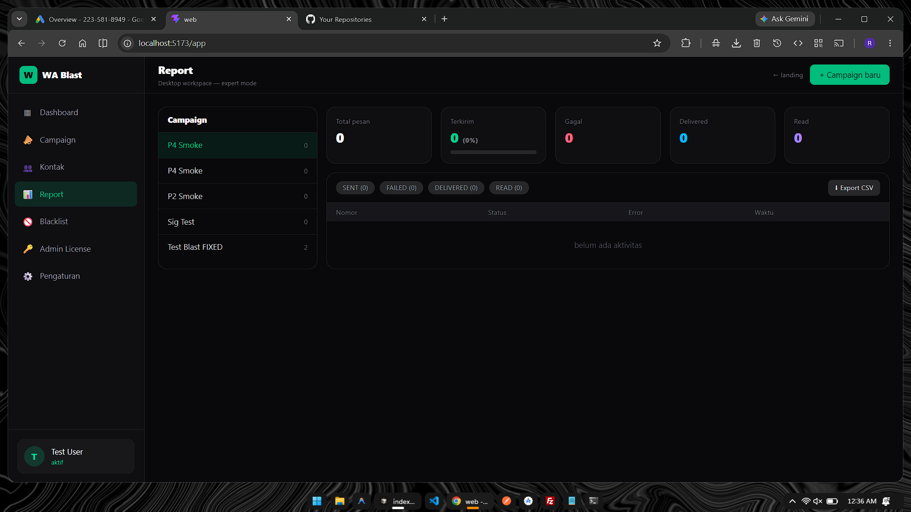
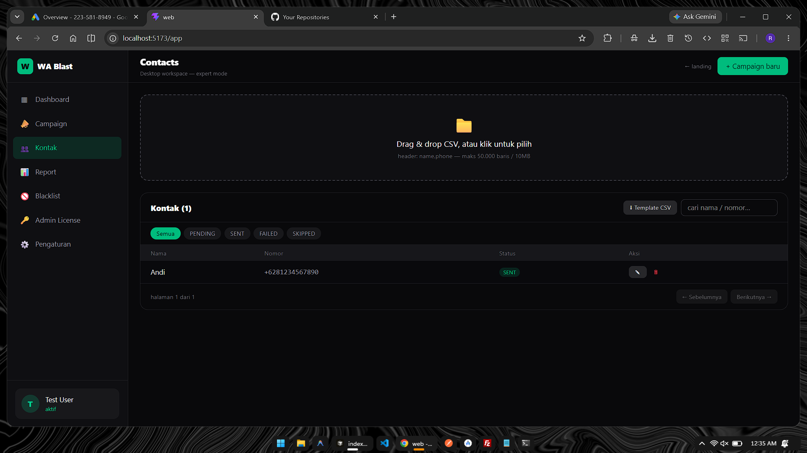

WA Blast Sender is a paid WhatsApp blast application. One WhatsApp business number blasts messages to thousands of contacts, with delay control, daily limits, and a per-account license key system. This is the official paid version of my earlier portfolio WhatsApp Sender Bot — rebuilt as a production-grade, multi-account web app.
This case study covers the stack, the blast architecture, the license enforcement model, and the API signing scheme that keeps the paid product locked down.
React Vite Tailwind Express Prisma MySQL crypto-js HMAC-SHA256 Meta WhatsApp Business Cloud API JWT License Key
An operator creates a campaign, picks a contact list, and sets the blast parameters — message template, per-message delay, and daily send limits. The dashboard shows campaign status and progress in real time.
Instead of a Redis queue, blasts are driven by a MySQL job table + in-app worker that polls for pending jobs. Fewer moving parts, one database, and the job state is durable by default — a restart never loses a queued blast.
All campaign write routes — create, start, pause — require a crypto-js HMAC-SHA256 signature (timestamp + nonce anti-replay) on top of JWT auth. The frontend signs every mutation via the shared @wa-blast/shared package, so raw API calls can't start or pause a blast out of band.
Each account runs under a per-account license key that gates blast volume and feature access. Daily limits are enforced server-side — the ceiling applies to every account no matter what the client sends.
Sending goes through the Meta WhatsApp Business Cloud API from a single business number — the delay control keeps the send rate safe from rate limits while still moving through thousands of messages.




@wa-blast/shared keeps request signing consistent across web and API without drift.Repo: github.com/ianocent/wa-blast-app — official paid version of the portfolio WhatsApp Sender Bot.
GitHub Repo · Blog · Portfolio · LinkedIn · GitHub
Back to all posts